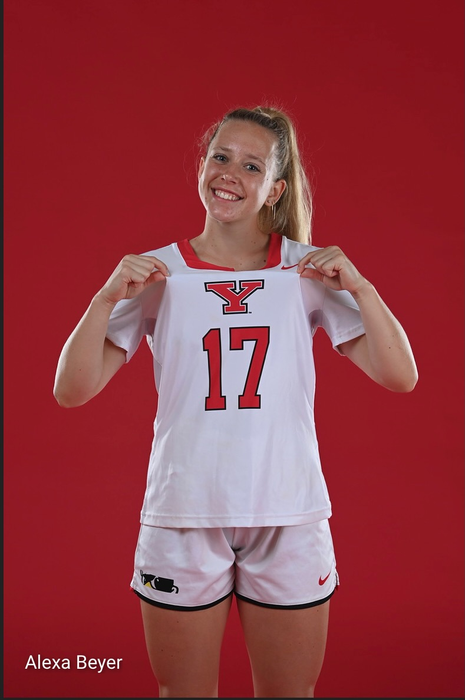
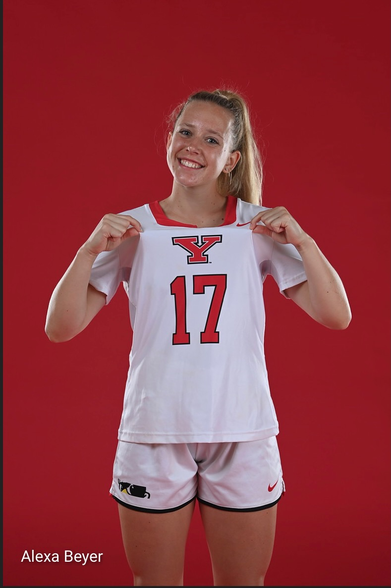

I am currently working with Dr. Jamie Tayar at the University of Florida looking at lithium abundances in red giant stars from Wang et al. 2024 GALAH DR3. I have been working with PySYD, which is an automated oscillation detection package to determine global asteroseismic parameters. In order to run PySYD we are using TESS light curves to determine a delta nu (large frequency separations between oscillation modes) and nu max (frequency of maximum oscillation) values. From there I am calculating parameters such as mass, radius and eventually ages to see if we can see a distribution relationship between things such as metallicities, evolutionary phases, ages, and above average lithium abundances.
Gainesville
(in no particular order)
Rubik's Cube
Nephology (Cloud Appreciation Society)
Magic Tricks
Hiking
Extensively Long Walks (5+ miles)
Running
Weight Lifting
SPJC Band (singer, ukulele, sometimes guitar)
Sewing
Origami (specifically paper cranes)
Professional Celsius Consumer
Ornithology
Latin Dancing
Swing Dancing
Rock Collecting
Maps
Junk Journaling
Stand-up Comedy